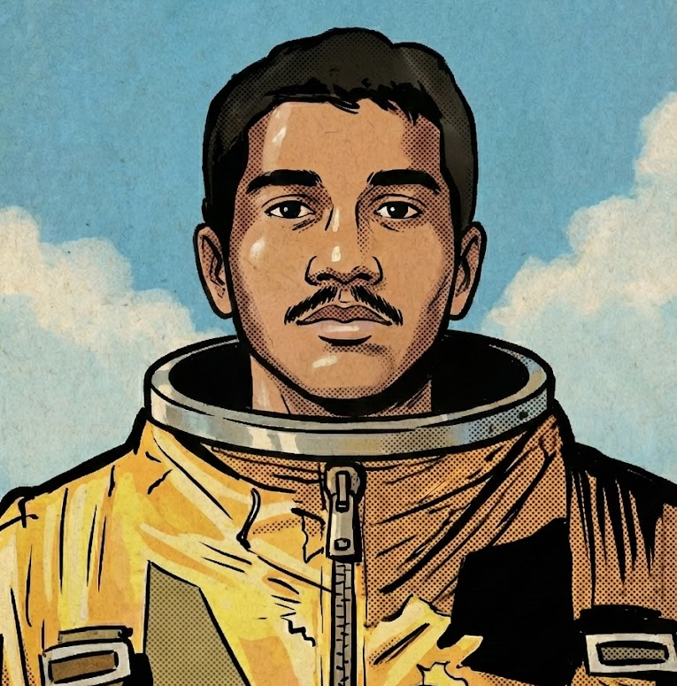

'" />About
Systems · Engineering · Steady Work
I am a Mechanical Engineering student with minors in Aerospace Engineering and Mechatronics. Through hands on projects and coursework focused on mechanical design, sensing, and system behavior, I spend most of my time breaking problems down to basic constraints and building solutions that respect those limits.
I try to be useful by owning a clear part of the system and making sure it behaves as expected. I start from what we know for sure, write down assumptions, and then test those assumptions against data. That means reading logs, tightening interfaces, writing simple tools, and keeping test plans current so the model, the data, and the hardware stay aligned.
For an internship I am looking to join teams that build and test demanding systems. I want to support senior engineers by taking real tasks from first idea through simple checks to final validation. The goal is to be dependable, learn fast, and contribute to work that moves projects forward in a visible and measurable way.
How I like to work
- • Start from first principles, identify what must be true, and keep the initial approach simple.
- • Make assumptions explicit so they can be tested instead of hidden inside the design.
- • Run early experiments and quick checks to see if the basic idea survives contact with reality.
- • Treat failures as updates to the mental model and track them until the root cause is clear.
What I am aiming for
- • Take on internship roles where I can help turn high level goals into clear and testable steps.
- • Build tools and small frameworks that reduce friction for other engineers and make data easier to trust.
- • Stay close to hardware and telemetry so design choices are always tied back to real behavior.
- • Grow into an engineer who can simplify complex problems, keep calm under pressure, and make sound decisions with limited information.